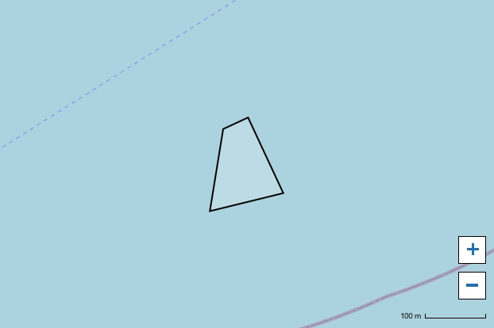
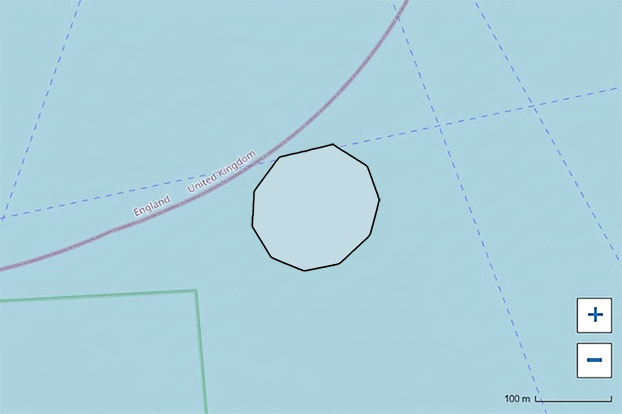

Sites and activities
- Method of providing site location
- File upload
Site 1
- Site name
- Hayling Island seafront groynes 14 to 16
- Map view
-

- Construction drawing 1
- groynes-14-to-16-general-arrangement.pdf
- Construction drawing 2
- groynes-14-to-16-plank-replacement-schedule.pdf
Site 1 – Activity 1
- Type of activity
- Maintenance of existing works
- What is being maintained
- Groyne
- Activity description
- Like for like replacement of rotten timber planks and posts on groynes 14, 15 and 16. About 60 planks and 9 king posts will be replaced using FSC certified greenheart hardwood, matching the existing sizes. New posts will be driven by a small excavator with a vibrating head, working from the beach at low tide. Old timber will be taken off the beach on the same tide and removed from site for recycling. No beach material will be moved other than to dig out around the posts being replaced, and it will be put back on the same tide.
- Maximum duration of activity
- 4 weeks
- Completion date
- Not needed to be completed by a certain date
- Activity limited to specific months
- Yes – April to June only, after the brent geese have left the harbours for the summer.
- Proposed working hours
- Monday to Friday, 07:30 to 17:30, within 2 hours either side of low water.
Site 2
- Site name
- Hayling Island seafront groynes 17 to 19
- Map view
-

- Construction drawing 1
- groynes-17-to-19-general-arrangement.pdf
- Construction drawing 2
- groyne-19-rock-armour-section.pdf
Site 2 – Activity 1
- Type of activity
- Maintenance of existing works
- What is being maintained
- Groyne
- Activity description
- Like for like replacement of rotten timber planks and posts on groynes 17, 18 and 19, using the same method, timber and working area as groynes 14 to 16. About 75 planks and 12 king posts will be replaced.
- Maximum duration of activity
- 4 weeks
- Completion date
- Not needed to be completed by a certain date
- Activity limited to specific months
- Yes – April to June only, after the brent geese have left the harbours for the summer.
- Proposed working hours
- Monday to Friday, 07:30 to 17:30, within 2 hours either side of low water.
Site 2 – Activity 2
- Type of activity
- Deposit of something new
- What new deposit is being made
- Other deposits: rock armour at the seaward end of groyne 19
- Activity description
- Placement of about 120 tonnes of 1 to 3 tonne Cornish granite rock armour around the seaward end of groyne 19, which has been undermined by scour. Rock will be delivered by lorry along the seafront access road and placed by a long-reach excavator from the beach at low tide. The rock will sit on a geotextile layer and will not extend more than 6 metres beyond the existing end of the groyne.
- Maximum duration of activity
- 1 week
- Completion date
- Not needed to be completed by a certain date
- Activity limited to specific months
- Yes – April to June only, after the brent geese have left the harbours for the summer.
- Proposed working hours
- Monday to Friday, 07:30 to 17:30, within 2 hours either side of low water.